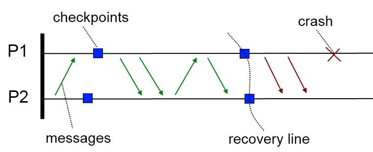
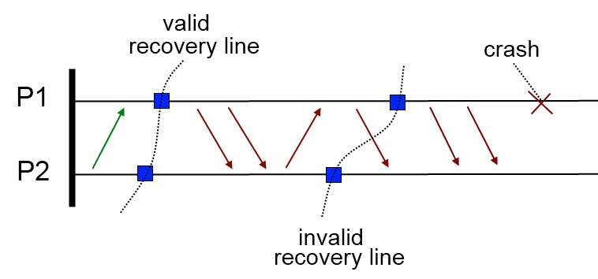
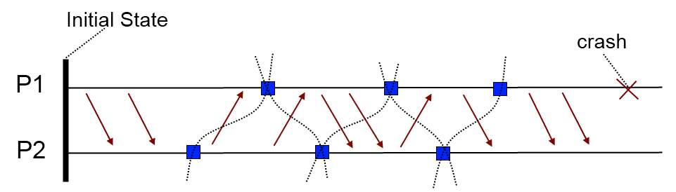
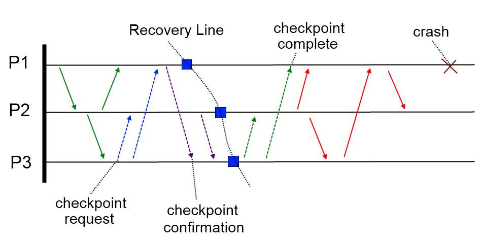
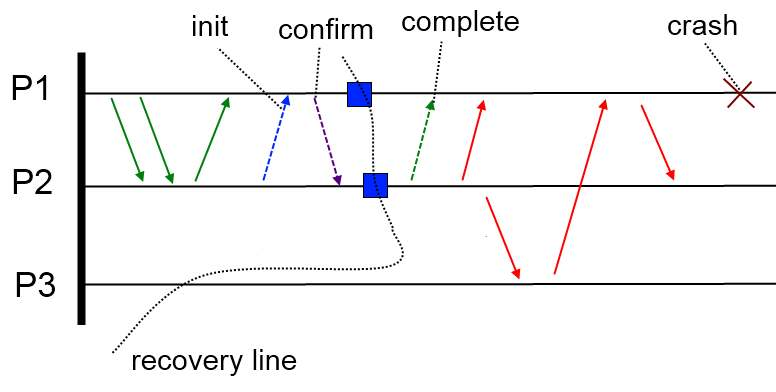
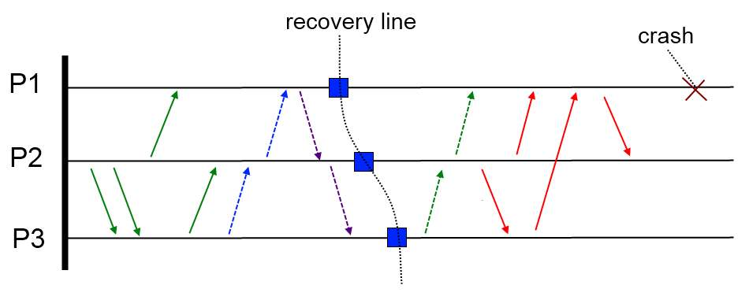

Natural Disasters don't help durability
 <
<
What Actually Happens |
What the World (Should) See |
|||||||||||||||||||||||||
|---|---|---|---|---|---|---|---|---|---|---|---|---|---|---|---|---|---|---|---|---|---|---|---|---|---|---|
|
|
<






| Transaction 1 | Transaction 2 |
|---|---|
| read AGE of MEMBER_ID = 1 /* will read 21 */ | |
| /* do some stuff ... */ | /* tries update, but is blocked... */ |
| read AGE of MEMBER_ID = 1 /* will still read 21 */ | |
| COMMIT | |
| update AGE of MEMBER_ID = 1 (SET to 22) | |
| /* do some other stuff ... */ |
| Transaction 1 | Transaction 2 |
|---|---|
| read MEMBERS with AGE > 30 /* receives 5 records */ | |
| /* do some stuff ... */ | /* can't touch existing rows ... */ /* ... but can add new ones */ insert MEMBER with AGE = 35 |
| read MEMBERS with AGE > 30 /* receives 6 records */ /* 5 repeatable + 1 phantom */ |
| Transaction 1 | Transaction 2 |
|---|---|
| read AGE of MEMBER_ID = 1 /* will read 21 */ | |
| /* do some stuff ... */ | update AGE = 55 of MEMBER_ID = 1 |
| /* do some more stuff ... */ | COMMIT |
| read AGE of MEMBER_ID = 1 /* will NOW read 55 */ |
| Transaction 1 | Transaction 2 |
|---|---|
| read AGE of MEMBER_ID = 1 /* will read 21 */ | |
| /* do some stuff ... */ | update AGE = 55 of MEMBER_ID = 1 |
| read AGE of MEMBER_ID = 1 /* will NOW read 55 */ | |
| COMMIT |
| Transaction 1 | Transaction 2 |
|---|---|
| update ORDERS /* Locks ORDERS */ | update MEMBERS /* Locks MEMBERS */ |
| update STORE_ITEMS /* Locks STORE_ITEMS */ | update ORDERS /* BLOCKED by Transaction 1 */ |
| update MEMBERS /* BLOCKED by Transaction 2 */ |
/
#